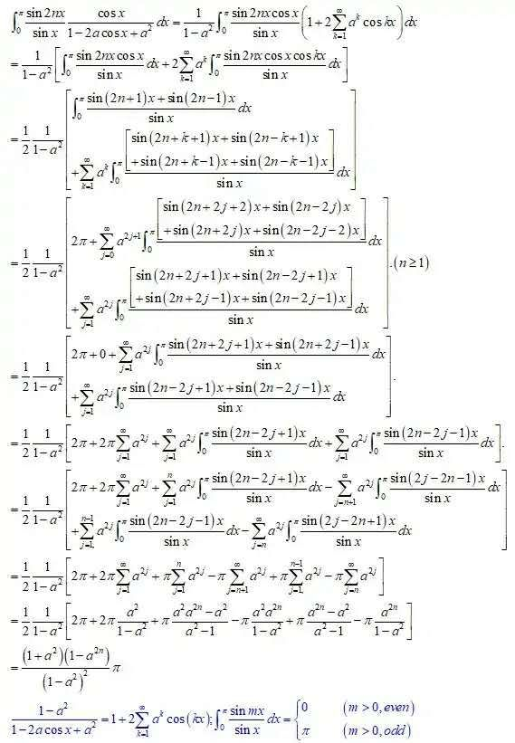

蓝桥杯备赛经验分享（二）
选手介绍
18计2班 陈友康
第十一届蓝桥杯 C/C++组 国赛二等奖
第十二届蓝桥杯 C/C++组 国赛一等奖
第十一、十二届大学生数学竞赛国赛预赛一等
经验分享
和大多数人一样，我进入大学之后才接触到编程，翻开谭浩强的红皮书，在学校电脑的上古编译器中运行了第一段代码，虽然不是 hello world，是个 max 函数，当时感觉，这东西还挺 nb，对编程的兴趣自然而然产生了。
接着到某个时候，学校会鼓励各班参加蓝桥杯，会有校赛，前三名是可以减免参赛费用，当时大一还是个菜鸡嘛，第一次参加凭着暴力美学的代码拿了第十，嗯，感觉还行，然后省赛自我感觉都会，结果省二，害，我相信很多刚接触这种竞赛的新手都会有一种盲目的自信，因为觉得自己都会，其实你根本没看数据量的大小。
要说明这一点需要提出一个叫时间复杂度的概念，如果 a=1 算作一条简单语句，计算机 1 秒内大概可以执行 1 亿条这样的语句，你在算法题的开头或结尾都可以看到类似这样的字样：时间限制：1s，内存限制：256MB。一般内存是不会超过的，在你们学习计算机组成原理这门课后对内存会有极其深刻的认识，简单只要知道一个 int 变量占有 4B，那么你理论上最多可以开一个数据量为 256MB/4B=64M=64*1024*1024=6 千多万大小的数组，所以很难超过这个内存限制。
而时间才是我们最最关心的，比如我们做某道题目，定义变量耗时一句，需要循环 n 次，每次里有 3 条简单语句，需要的总耗时就是3n+1，但我们一般不说它的复杂度是 3n+1,而是说它的复杂度是 O(n)来统一，类似的，如果一个代码总的循环次数为log2(n)取整，每次循环执行固定的 k 条语句，那时间复杂度就是 O(log2(n))
举个最简单的实例，当一个没有任何知识的新手求斐波那契数列第 n 项的时候，假设 a1 和 a2 为最初的两项，他会依次算 a3,a4…一直算到 an，一共要算 n-2 次，新手:”太简单了，这不有手就行”，然后实际成绩:10 组数据通过 2 个也就是 20 分
因为如果有一个数据为 10000000000000000，也就是让你求斐波那契第 10000000000000000 项除以 10^9+7 的余数，你这样的算法一定会超时，因为这个数字远超了 1 亿。
实际上只要你知道了快速幂的知识就可以轻松地以 log2(n)的复杂度来解决这个问题(只不过斐波那契数列后面的数字很大，会超出整型变量可表示的范围，所以一般会让你求 10^9+7 的余数)，同时你会发现 log2(10000000000000000)≈53，这个数量级的差距直接可以从运行几年到运行只要几毫秒
具体可以搜索关键词 斐波那契数列 快速幂
再举个例子(直接复制题目了)
数学家高斯很小的时候就天分过人。一次老师指定的算数题目是：1+2+…+100。高斯立即做出答案：5050!
这次你的任务是类似的。但并非是把一个个的数字加起来，而是对该数字的每一个数位作累加。
这样从 1 加到 100 的“和”是：901
从 10 加到 15 是：21，也就是：(1+0)+(1+1)+(1+2)+(1+3)+(1+4)+(1+5)
按这样的“加法”，从 1 加到 1000 是多少呢？
现在我把这题扩展一下，从 1 加到 n 是多少
新手:”就这?太 tm 简单了，一个循环变量 i 从 1 到 n，再对每个 i 取每一位加起来不就行了，小学生都会”
实际上这题可以以log10(n)的复杂度来解决，而且是用纯数学角度推导的做法，不过这题是我改的，大概率只有我写过这题的log10(n)的复杂度代码。
总之，如果任何题目的 n 都<=10，那么全员都可以拿满分了，然而事实很残酷，题目的 n 的范围可以很大很大，所以才需要算法。
在算法优化的世界里，没有不可能，只有想不到。
如何备赛？
1. 熟悉你选择的参赛语言
像 C/C++，你得会创建变量，你得会用数组，得会用循环，得会用函数，后面学到线段树你需要会创建结构体，偶尔会用到 STL 库中的排序函数，可以了解一下 STL 库有哪些功能，够了，打算法题就是这么朴实无华，用最简单的功能解决难的题目。
2.练题平台
这个其他学长也说过了，我用过的有蓝桥官网的，还有 acwing，hdu，leetcode，洛谷，现在 的刷题网站基本都挺完善了，建议先用蓝桥官网的熟悉熟悉，后面再试试其他的，leetcode 是 评论区最丰富的一个平台，而且大多数题目有官方题解，如果在其他网站感觉刷题很累可以尝 试一下这个，acwing 也不错，反正找个平台能坚持刷题就会有收获的。
推荐用书：《挑战程序设计》
刷题频率嘛，自己定就行，毕竟也有那么多课，闲着没事就可以随便到哪个平台上找题做一做。
做新题的过程中经常会是这样的一个路径：思考->写出代码->提交运行超时(当然基础不好你可能很多次编译错误)->深度思考->发现不会->查找题解->发现是个新的思路或算法->学习新知识->解决原问题->然后你便解锁了一系列关于这个算法的题目
做到一定水平之后会是这样一个情况：思考->发现不会->搜索题解
这其实是个进步的过程，因为你已经开始能注意到自己能思考到的做法的时间复杂度都不能在时限内通过所有的 n 大小的数据测试。
要学习的几个大头有贪心，深度优先搜索，广度优先搜索，动态规划，位运算，这些属于思想，除了这些思想具体的常见算法有并查集，单调栈，前缀和，各种树如 tire 树，树状数组，线段树，甚至主席树，当然不限于这些，能对每个算法的掌握和应用的灵活程度的多少就看你花的时间了。
3.保持心态，规律作息
刷题的路上肯定会遇到想不到怎么做的题目，然后你可以搜对应的题目，网上几乎都是有博文解答过的，其实大多数博主并不会讲题目，他们都是在理解了一定的重要关节的基础上和你讲的，很多地方一笔带过，同时你刚看到这题的正确做法时有可能很难想清楚它的某个环节的正确性，这很正常，我一开始做题也有时会被某个题目卡一个下午，只要心态稳定，只要肯花时间，总是能搞明白的，要搞懂一个题目，就不要对这个题目留有任何疑问点，这样才能稳定地进步。
其实学得越多，越会发现自己菜，因为总有那么些类似大山一样的题目是你攻克不了的，这是事实，就像某些高中卡过你的数学难题现在让你再做一遍你还是没思路，接受这个事实会让人变得更加虚心，我从来不是个自信的人，我只是尽力表现出我最好的水平，结果不会骗人，所以我也不会特地去关心结果，从第二次参赛开始结果就发生了很大变化了，第二次参赛国二第十名，第三次参加国一。
一张图片告诉你世界有多大

有同学说我还没学过定积分，没事，你学过了你这题也不会(/dog)，从这题我只想说明一个道理：只学课上学的东西终究只是让你成为井底之蛙，多学学课外的东西，多加些大佬云集的群才能窥见外面的世界是有多大，而且总有你达不到的高度。
附
总之，如果你觉得轻松，那是因为你安于现状，如果你畏难不前，那是因为你不明白勤能补拙，什么都舍弃不了的人，同时也是什么都改变不了的人，我也打游戏，打过 LOL，打过王者荣耀，高中时我就一直不是什么爱学习的人，也是进入大学之后慢慢成熟了起来，LOL 最多打到过铂金晋级赛失败吧，王者上过荣耀，现在我都不玩了，因为真的当你脱离游戏世界后你会发现毫无所获（还不如看看放松时看看动漫），学习才能让自己变得充实起来。
没有什么捷径，如果你的目标是省赛拿奖，那是很简单的，你只需要编程语言基础牢固，不需要太多的训练，如果你想冲击国一，一定是需要吃不少苦的，并且不管结果如何，对以后的面试也会有极大的帮助，要变强，只有靠自己，加油!
其实我个人建议数学竞赛也可以参加参加，因为这两者很多地方是共通的，不过数学国赛要进决赛得拿到国赛预赛江苏省前 26，我个人除了大一就并没有花多少时间在专门刷数学题上了，而且容易算错所以一直在两三百名，不过我们学校填附加分的时候预赛一等就算国一了,可以说是非常划算。
背考研政治去了。